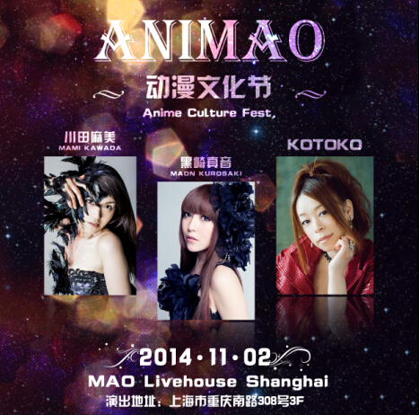

|
川田麻美、黑崎真音、KOTOKO专场Live 首届“ANIMAO”动漫文化节11月2日上海举办  11月2日，由日本BAD NEWS公司主办的首届“ANIMAO”动漫文化节即将在上海MAO LIVEHOUSE亮相。本次活动邀请到川田麻美、黑崎真音、KOTOKO三位日本顶级动漫歌姬同台献唱。 本届“ANIMAO”动漫文化节上不仅有在许多动漫音乐迷心中女神级的歌手首次在华同台亮相，并且将请来声优与漫迷进行互动。同时，还会有日本超人气动漫、动漫歌曲MV、原创动漫等轮番上映！cosplay服装、饰品、动漫周边产品、CD等日本超热销商品，以及歌手CD的首次官方贩卖，都将为中国粉丝零时差奉上。 ----------------------------------------------------------------------- 【时间】 2014年11月2日(周日) 开场17:00 开演18:00 【地点】 MAO Livehouse
Shanghai 上海市卢湾区重庆南路308号 【阵容】（排名不分先后,按姓名拼音排序） 川田麻美 日本北海道出身的女性歌手。“I've”的成员之一。昵称是まみまみ。 黑崎真音 黑崎真音生活在东京秋叶原，因在日本ディアステージ餐厅唱歌后开始活跃。并且为12集的日本动漫《学园默示录》演唱12首不同的片尾曲。并发行了自己的首张专辑《H.O.T.D.》。她还为2010年10月的动漫《魔法禁书目录第二季》献唱片尾曲。 KOTOKO 日本I've公司的主要歌手之一，在多数的歌曲中担任主唱。她所演唱的主要是动画以及电脑游戏（大多是美少女游戏，含十八禁游戏）的主题曲。她的歌曲内大多由她自己作曲及作词，同时她也会为I've旗下的歌手的乐曲作词。包含以其他名义在内，担任了超过150首歌曲的主唱。她的主要作品因为她的独特声线的风格，她本身因而被视为电波歌曲的代表之一。 【门票】 预售：380元
现场：450元 VIP：580元 ※购VIP门票可免费参加歌手见面会及获赠神秘大礼！ 预售票链接：http://e.mosh.cn/25725
|